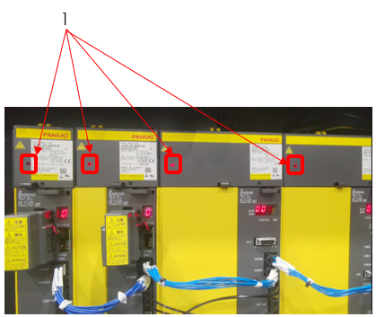

|
<< Click to Display Table of Contents >> Navigation: Chapter 1 Safety > Safety Precautions > During Work |
|
|
<< Click to Display Table of Contents >> Navigation: Chapter 1 Safety > Safety Precautions > During Work |
•Turn OFF the power before performing maintenance of the machine. When work must be performed with the machine power ON, confirm that all machine operations are completely stopped and make sure the servo light (FANUC unit) in MTC is off (Refer to Fig 1.2).
•Never go near the moving parts of the machine. If you must approach moving parts to perform maintenance, be sure to take adequate safety precautions. Inadequate attention to safety may result in death or another serious accident.
•Always keep the doors and covers closed during operation. If you must work with a door or cover open when performing maintenance, be sure to take adequate safety precautions. Inadequate attention to safety may result in death or another serious accident.
•If an operator gets trapped inside the machine, press the "Emergency Stop" switch regardless of whether the machine power is ON or OFF.
•If the machine is stopped by a power failure or power supply fault, the machine will turn off automatically and will not restart after the power is resumed.
•If the machine is stopped by a power outage or fault in the power supply, check that the parameter, program, and offset data have not been corrupted. The machine may be damaged if it is operated using corrupted data.
•Be aware of the movement range of the machine and auxiliary components (each axis stroke, rotation range, etc.), and keep all body parts clear of moving components.
•When two or more people are required for maintenance work, be sure to maintain clear communication at all times to ensure operator safety. When performing work, be ready to press the "Emergency Stop" switch at any time.
•Be sure to always pay attention to the safety precautions listed on the warning labels affixed to the machine (Refer to 2 Warning Labels).
•Do not move the switches or change the circuits except for adjustment purposes. In particular, operating the machine with the interlock(s) or other safety devices or functions disabled is extremely dangerous and may result in death or damage to the machine.
•If a circuit or other component needs to be changed for adjustment purposes, be sure to return it to the original setting after adjustment is completed.
•The optimum values for the NC parameters and machine parameters are set when the machine is shipped. Do not change any parameter setting unless it is described in the manual. Also, be sure that you fully understand the function of a parameter before attempting to change the parameter setting, and return the parameter to its original setting after the work is completed. If you try to operate the machine without the proper settings, the machine may operate unexpectedly, and this may result in serious injury, death, or damage to the machine.
•If the memory clear operation needs to be performed, be sure to contact your Makino service representative beforehand.
•If an alarm is triggered, eliminate the cause of the alarm using the appropriate procedure. If the remedy procedure is unclear, contact your Makino service representative.
•Never climb onto the telescopic covers. This may deform the covers or result in injury.
•When using a stepladder or stool, it should be sturdy, safe, and have anti-slip surfaces.
•If any oils or cutting fluids get into your eyes, body, or on your skin surface, they may cause severe health problems. Wear safety gloves, mask, safety glasses, and other safety equipment.
•Wear safety gloves whenever handling chips, tools, and workpieces.
•Protective gear should be worn to protect hearing when excessive noise may be generated during operation or maintenance.
•If lubricating oil, grease, cutting fluid, or other substances are spilled on the floor, it may result in slippage, causing injury. Wipe up any spilled fluids as soon as possible.
•Never touch a switch, button, or key while your hands are wet. Failure to observe this precaution may result in electric shock.
•Some devices (motors, lighting equipment, valves, etc.) may become very hot while the machine is operating and remain hot soon after the power is turned OFF, so be careful to avoid burns.
•Do not subject the machine to sudden impact or jolts. This may cause the machine to perform an unexpected motion or damage it.
•Do not use the machine for operation outside the specifications or exceeding the performance range. This may cause the machine to perform an unexpected motion or result in serious injury, death, or damage to the machine.
•Use the most appropriate cutting tool, tool holder, retention knob, and workpiece, and make sure that they are all secured firmly in place. Otherwise, the workpiece may fall or the tool may fly out, and this may result in damage to the machine, serious injury, or death.
•Be careful that you do not leave objects such as tools or jigs inside the machine.
•Do not place the tools, workpiece, or other parts on an unstable location.
•When a lifting sling or attachment is necessary, verify that it is strong enough to support the weight of the parts. Confirm that no one is close to the machine and the parts are well balanced, and be careful not to hit to the machine.
•Never go under a load that is being lifted. While transferring the machine, constantly pay careful attention to the hoisted load during the operation.
•Check that the tool numbers are registered correctly. Otherwise, the spindle may rotate at a speed outside the allowable range, the tool may fly out, and this may result in damage to the machine, serious injury, or death.
•Never insert hands or feet into the lift-up chip conveyor or internal chip conveyor. They may be pulled in, and this may result in death or another serious accident.
•When machining material that generates dust particles, to prevent health hazards due to inhaling the dust particles, observe the following:
•After machining a workpiece (product), wait until floating dust has settled or cleared before opening the operator door.
If you open the operator door immediately after machining, floating dust scatters outside the machining chamber.
•To perform any of the operations below, be sure to wear a high efficiency dust proof mask.
(Recommended: 99.9% or higher particle collection efficiency)
Sucking in dust may cause pneumoconiosis.
•When opening or closing the operator door
•When working with the operator door being open
•When replacing a tool in the tool magazine
•When handling dust

Figure 1.2 Servo Light (FANUC unit)
No. |
Name |
1 |
Servo Light |